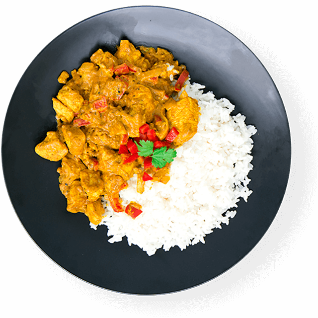

Gotowanie - czysta przyjemność
Strona pełna pysznych przepisów.
Gotowanie jako pasja.
Zrobienie dobrej potrawy nie jest sztuką prostą. Żeby nauczyć się gotować, trzeba wiele lat poświęcić kuchni, przepisom, przyprawom i samym eksperymentom kulinarnym. Nawet jeśli mówimy o tradycyjnej kuchni, takiej, do jakiej przyzwyczaiły nas nasze mamy i babcie, to mamy do czynienia z nie lada sztuką.
Coraz więcej Polaków zaczyna swoją przygodę z prawdziwym gotowaniem. Przygoda ta zaczyna się od kulinarnych eksperymentów, ale dla tych, których wciągnie, staje się prawdziwą pasją i hobby. Jednakże sama pasja do gotowania to jedynie mały sukces edukacyjny mediów telewizyjnych. Prawdziwym sukcesem może być to, że Polacy lubią gotować i co najważniejsze odżywiać się zdrowo. Zdrowo i ze smakiem – tak właśnie dzisiaj jedzą Polacy.
Niestety, ale głównym problemem związanym z uprawianiem tego pięknego hobby, czy raczej z pielęgnowaniem tej szlachetnej pasji jest na pewno to, że mamy na co dzień bardzo mało wolnego czasu. Mamy go bardzo mało, ponieważ jesteśmy zabiegani, zajęci i ciągle zapracowani. Brak czasu jest problemem największym dla wszystkich, a problem ten uniemożliwia posiadanie jakiegokolwiek hobby. Na szczęście gotowanie to pasja, w której łączy się przyjemne z pożytecznym. Bo przecież nikt nie będzie miał do Nas pretensji, jeżeli w ramach pasji możemy ugotować niedzielny obiad dla całej rodziny.
Dlatego chciałabym zaprezentować Państwu parę prostych i przyjemnych przepisów na smaczne dania, które mam nadzieję sprawią państwu i nie tylko, wielką radość!
- Barszcz czerwony – Idealny nie tylko na święta ale także na zwyczajny rodzinny obiad.
- Sałatka z kurczakiem – przepyszna i zdrowa, a do tego z przepysznym kurczakiem, który doda jej smaku.
- Curry z ryżem – Świetne orientalne danie idealne na kolację z przyjaciółmi.
- Makaron z serem – Może nie najzdrowszy, ale za to przepyszny i szybki w przygotowaniu.
- Naleśniki - Na słodko czy wytrawne? wybór należy do ciebie. Niezwykle proste i szybkie w przygotowaniu.
 |
 |
| fot. Naleśnik z twarogiem i syropem klonowym | fot. Kurczak curry z ryżem |
|---|---|